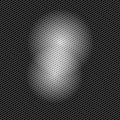

05_dataCleaning
소속: 연구 노트
naive retraining
정제 없이 그대로 재학습하면 label noise가 남긴 흔적이 지워지지 않는다. 아래는 1, 5, 10 epoch 뒤의 model inversion 결과다.
naive retraining은 클래스 정보를 보호하기 위해 별다른 조치를 취하지 않는다. 10번의 epoch 후에도 inversion은 여전히 인식 가능하다.
Unlearning
경사하강법의 반대 방향으로 밀어내는 방식은 다르게 움직인다.

임계값은 gradient norm 분포가 이봉성을 보이는 골짜기에서 잡았고, 그 아래 구간은 학습 초반 몇 epoch 동안만 마스킹했다. 글이 그림 옆으로 자연스럽게 흐르는지 보려면 문장이 이 정도는 길어야 한다.
남은 질문은 이 필터가 노이즈만 걷어내는지, 아니면 어려운 샘플까지 같이 버리는지다. 이건 다음 노트에서 따로 재봐야 한다. 그림 배치는 alt 에 적는 것으로 정해져 있어서 본문이 평범한 마크다운으로 남는다.
여기를 가리키는 글 1
- 연구 노트 — 연구 노트 01 - gradiant MPQ 02 - 여기 03 - [[경사하강법]] 04 - 05 - 06 -